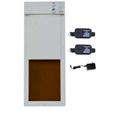

Electronic Fully Automatic Dog Door
Electronic Fully Automatic Dog Door
Description
Engineered for performance, value and extreme reliability, Power Pet doors are motor driven and activated by a tiny ultrasonic collar. Other electronic pet doors merely unlock a hinged panel, requiring your pet to push it open. That something that a lot of pets don’t like to do. Patented Power Pet doors open completely under their own power. They feature a translucent door panel made of a new super-strength, bulletproof resin. When you’re pet approaches, the air-tight panel quickly and quietly powers upward disappearing into the stylish housing. Because the panel moves up and down and does not swing out, it can mounted in hermetically sealed grooves for air-tight closure. This mounting arrangement makes it impossible for an intruder to kick it out. The result is the most secure pet door against intruders and stray animals. Your pets are empowered to come and go as they please while their animal friends are politely asked to stay out. Panel Size: 12-1/4 in. x 16 in. for pets up to 90 lbs.
In Stock
Price $300.00
Customer Reviews
I have owned this door for over a year. On one hand, it's the best possible purchase for a home like ours with three small dogs. It has saved me from having to wake up in the wee hours of the morning to let the dogs out. More importantly, it has saved our floors since the dogs let themselves out and back in while we're at work. I thought it would take the dogs a few days to learn how to use it, but freedom must have been calling, because they picked it up in less than an hour. So, the family and the dogs are happy, for the most part.